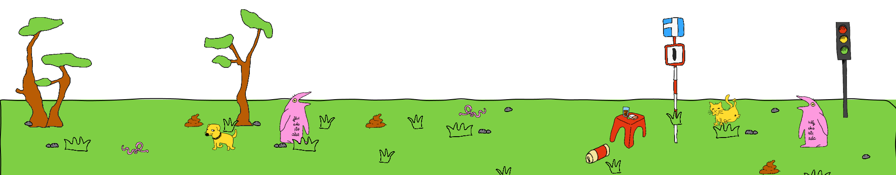
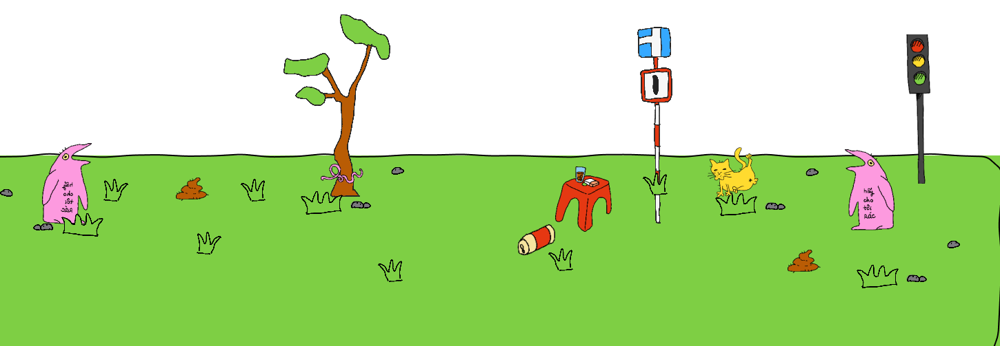
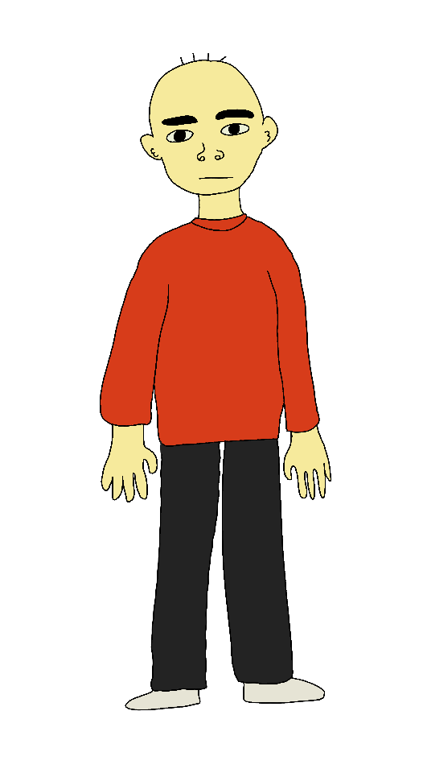
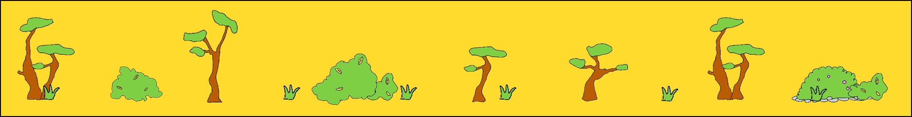
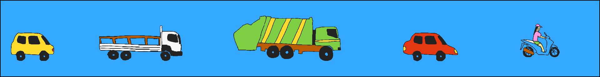

About
Big Idea
Caring for the Earth is not only a policy goal but also a human responsibility. SDG 15: Life on Land calls on us to protect forests, restore ecosystems, and halt biodiversity loss, yet this mission can only truly matter when we feel connected to the living world around us. As Naskar (2021) writes, “If we don't have a place for nature in our heart, how can we expect nature to have a place for us.” This quote reminds us that nature can only survive in our world when it first exists in our values, choices, and everyday spaces. Give ecosystems a place in your heart by making room for them in your everyday living space.
Project Settings
Urbanization is one of the reasons for terrestrial ecosystem downgrading (Barry 2014). We cant avoid urbanization, but can avoid its destruction just by small actions in our daily life. And by fighting city development consequences, we are leaving more spaces for the ecosystem to cycle and be alive along with us.
In this project, we will walk through a day of Nam - an average person living in HCMC, following him through his way to the park, to work and back to home. Each stage will explore how the current environmental problems of the city affect not just Nam, but also other living creatures around Nam, and some suggestions of how we can improve the problem!



Stage 1
Morning park walk
Early in the morning, the first thing Nam is greeted with is a flood of irritating noises from outside: car horns, construction work nearby, and even his neighbor singing karaoke in the middle of the day. Not only Nam is the victim, but also the dogs and cats around.
This stage shows how noise can stress out both people and animals. From that, we encourage people to become more aware of their own noise-making activities for a better environment for not just us, but also for dear animals around us.

Stage 2
Go to work
Then, while going to work, Nam is surrounded by fuel vehicles releasing thick smoke and intense heat onto the streets. The polluted air makes the environment uncomfortable and difficult to breathe in, affecting not only nature but also human health every day.
This stage shows how fuel vehicles contribute to air pollution, global warming, and health problems. From that, we encourage people to switch to electric vehicles in order to reduce emissions, protect the environment, and create a healthier future for everyone.

Stage 3
Go back home
It is finally time for Nam to head home, but the road leads to his home located next to the canal, which often floods in the late afternoon.
This stage shows how canal flooding, made worse by littering, can harm people and other living creatures on land. We want to encourage everyone to rethink about careless habits like littering into the canal. Careless thoughts are not harmless as they can turn into real actions that hurt both land life and people's own living conditions.
Credit
Nguyen Ho Thai Anh - s4052244
Nguyen Ngoc Tam - s3980446
Ha Ngoc Minh Thu - s3980635
----------------------------
Supervisor: Renick Bell
----------------------------
COMM2754
RMIT School of Design and Communication